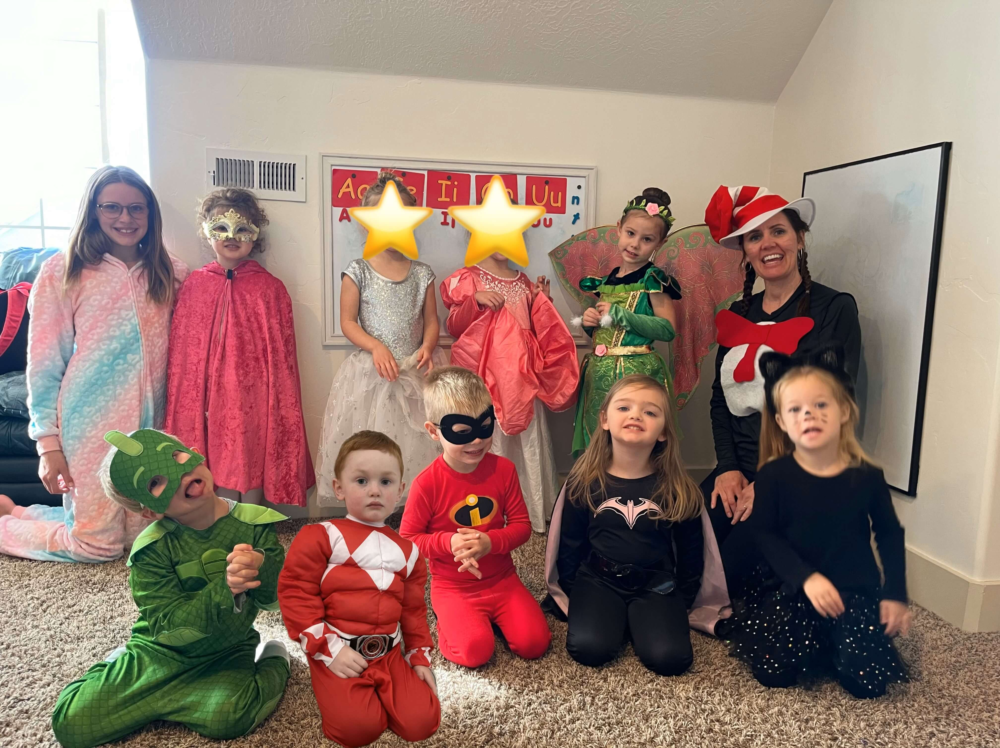

About Us
Miss Crystal

Our Classroom
Games
After seven years of teaching in private schools, the next chapter led to an exciting new setting—an in-home preschool. Mountain Top In-Home Preschool was established in 2022 and is brimming with potential for an inspiring future. We take immense joy in welcoming children into our home and watching them develop a love for learning. The kids delight in playing games, exploring the outdoors, and engaging in hands-on activities. We also cherish moments when they are fully immersed in storytime or focused during work activities, fostering their growth in every way.
Our Curriculum
Science
Poems
Math
Our curriculum features a diverse blend of programs, including The Good and the Beautiful, Right Start Math, Who I Really Am, Joy School, and elements inspired by the Charlotte Mason approach. These carefully chosen resources are designed to nurture our preschoolers' growth and instill a lifelong love of learning.
